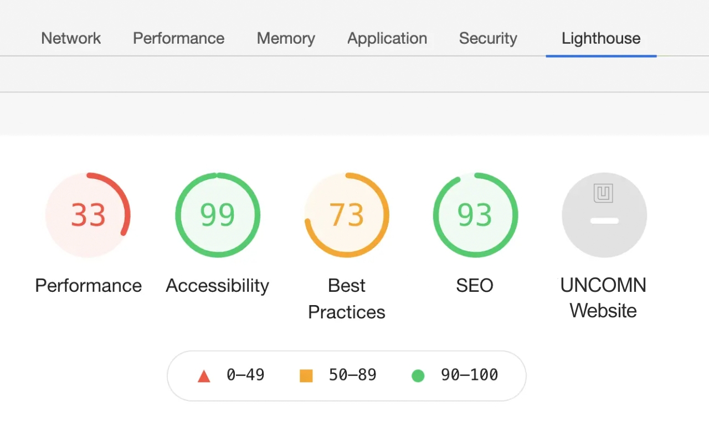
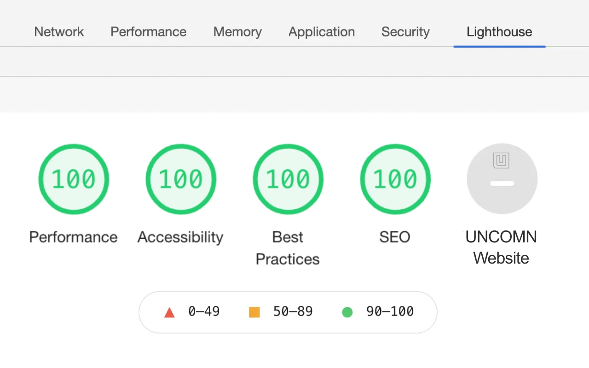
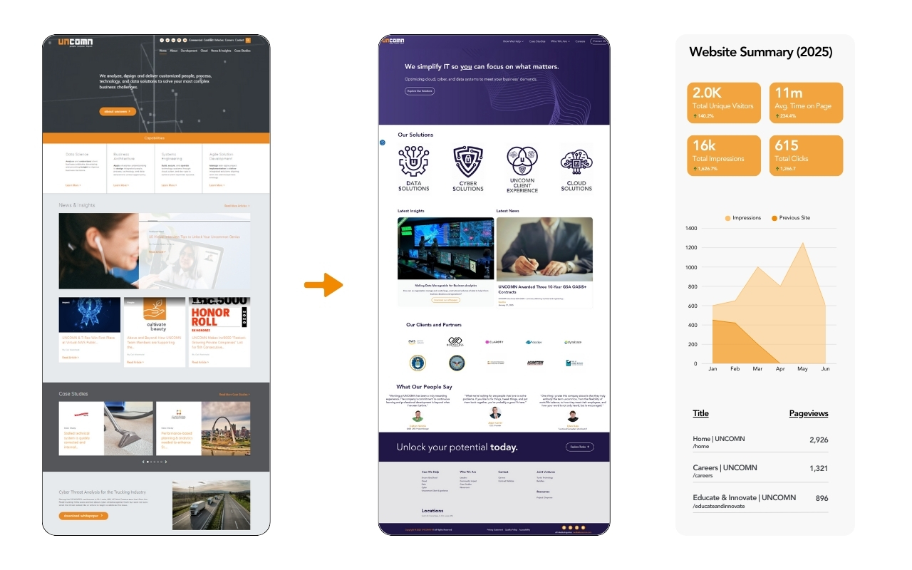
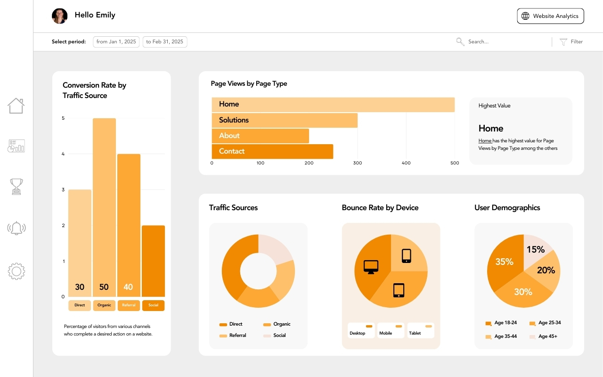

A comprehensive technical audit and optimization sprint that boosted organic visibility, tripled site speed scores, and established consent-compliant analytics tracking from the ground up.
UNCOMN's site was riddled with technical debt — missing meta descriptions, broken heading hierarchy, uncompressed images, no alt tags, and zero structured data. PageSpeed scores were in the 30s and organic traffic had been declining for months.
I ran a full Lighthouse and SEMrush audit, prioritized fixes by impact, and executed — restructured on-page content, added meta and alt tags, compressed all assets, cleaned up H1s, and integrated 10Web Booster with CookieYes, GA4, and Consent Mode v2.
Ran Lighthouse, SEMrush, and Search Console audits. Compiled a prioritized task list ranked by traffic impact.
Fixed all meta, heading structure, alt tags, link integrity, and accessibility violations across every page.
Rebuilt CTA sections, improved internal linking architecture, and compressed images by an average of 70%.
Implemented GA4 + GTM with Consent Mode v2, set up conversion events, and built a Looker Studio dashboard.




Increase in organic traffic
Improvement in site speed
Increase in overall site score